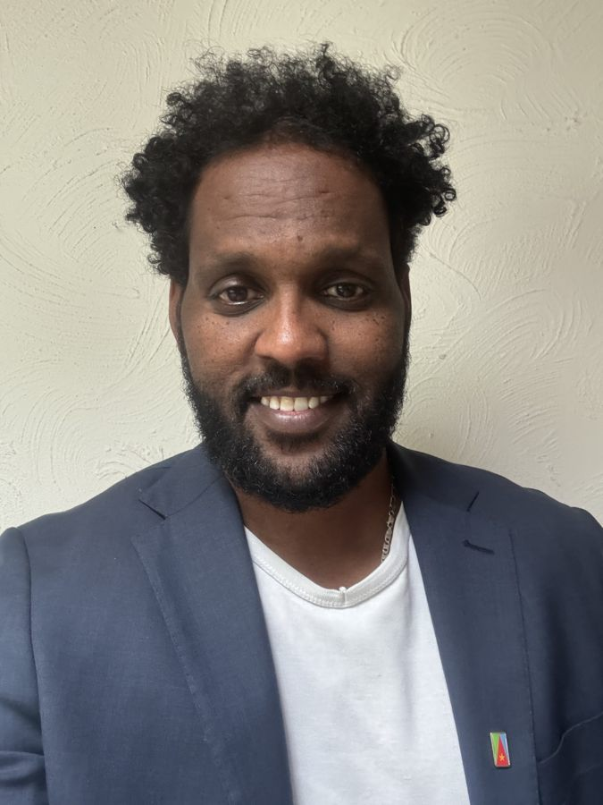

Velkommen
Velkommen til Gila Brobygger
Din bro til forståelse og samarbejde – professionel tolkning, mentorforløb og konsulentbistand.

Tjenester
Sprog, forståelse og praktisk støtte
Vælg det område, der passer til din situation – eller kontakt os, hvis du er i tvivl.
Fremmedtolkning
Tolkning ansigt-til-ansigt ved møder, hjemmebesøg og i institutioner.
Læs om fremmedtolkning →Telefontolkning
Hurtig og fleksibel tolkning via telefon, når der er brug for øjeblikkelig hjælp.
Læs om telefontolkning →Videotolkning
Online videoopkobling med tolk – god til møder og samtaler med visuel kontakt.
Læs om videotolkning →Skriftlig oversættelse
Oversættelse af breve, dokumenter og officielle papirer – fra og til tigrinya.
Læs om oversættelse →Social Mentor
Individuel støtte, mentorforløb og hverdagsrådgivning med fokus på integration.
Læs om mentorforløb →Familiekonsulent
Støtte og vejledning til familier – kommunikation, konflikthåndtering og samarbejde.
Læs om familiekonsulent →Støtteperson (§ 75)
Neutral og uafhængig støtte til forældre med anbragte børn.
Læs om støtteperson →Tilgang
Vi lytter først – og finder en praktisk løsning
Arbejdet tager udgangspunkt i den konkrete situation. Målet er klar, præcis og respektfuld kommunikation, der skaber tillid og gør det lettere at samarbejde.
Helhedsorienteret
Både sproglige, kulturelle og praktiske forhold har betydning for, at budskabet når frem.
Respektfuld
Vi møder mennesker uden fordomme og tilpasser kommunikationen til den enkelte situation.
Konkret
Vi arbejder med tydelige aftaler og løsninger, der kan bruges i hverdagen.
Om
Sproglig præcision og kulturel forståelse
Gila Brobygger kombinerer tolkeerfaring, pædagogisk indsigt og kendskab til det danske samfund. Det giver en praksisnær tilgang til både tolkning, oversættelse og støtteforløb.
Arbejdsområder
Erfaring, der præger arbejdet
Gila Brobygger har erfaring fra tolkning, familiekonsulentarbejde, mentorforløb, undervisning, asyl- og integrationsarbejde samt støttepersonopgaver.
- Tolkning og oversættelse: Fremmedtolkning, telefontolkning, videotolkning og skriftlig oversættelse fra og til tigrinya.
- Familiekonsulent: Støtte og vejledning til familier i samarbejde med skoler, institutioner og myndigheder.
- Social Mentor: Individuelle mentorforløb med fokus på integration, systemforståelse og jobsøgning.
- Undervisning og integration: Erfaring fra undervisning og asyl- og integrationsarbejde.
- Støtteperson (§ 75): Neutral og uafhængig støtte til forældre med anbragte børn.
Video
Se en video om Gila Brobygger
Gila Brobygger – sammen bygger vi bro til nye muligheder
Ingen skal stå alene med de udfordringer, livet kan bringe.
Hos Gila Brobygger handler det om at skabe forbindelser, bygge bro mellem mennesker og muligheder og hjælpe med at finde vejen frem – også når vejen føles stejl og uoverskuelig.
Ligesom én hånd kan gøre en forskel, når et andet menneske har brug for støtte, tror vi på værdien af nærvær, forståelse, samarbejde og menneskelig udvikling.
Vi bygger bro mellem mennesker, udfordringer og muligheder.
For nogle gange er det vigtigste ikke at gå vejen alene, men at have nogen ved sin side.
Kontakt
Har du brug for hjælp til en samtale eller en opgave?
Skriv eller ring, og fortæl kort, hvad du har brug for.